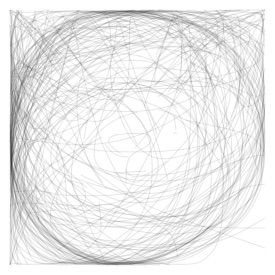
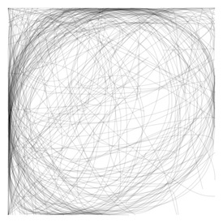
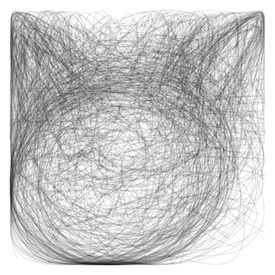
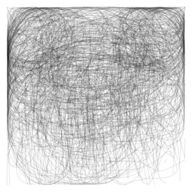
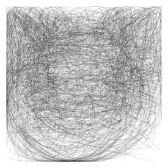
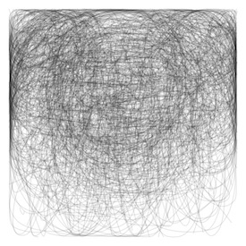
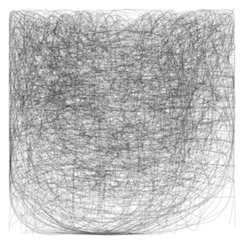

In this short visual exploration, we answer a simple question: how long are people spending on drawing these doodles?
Let's start with dogs!
Distribution of dog drawing times
Mouse over bars to see example doodles
drawn in that amount of time below.
The above graph shows the distribution of time spent drawing a dog for the 152,000 dog doodles in the Quickdraw dataset.
Only dogs correctly recongized by Google's algorithm as a dog are included.
Mouse over the bars to see what a 2 second dog looks like compared to a 10 second one.
We can see the average amount of time spent drawing a dog was 7.4 seconds. The times exclude pauses between strokes, which for dog drawings was an average of about 3.4 seconds.
This leads to a second question: is 7.4 seconds a long time to spend doodling an animal? What about cats?
Dogs and Cats, Drawn Together
Dogs vs cats
Dog drawings
Cat drawings
We can see that people draw cats faster than dogs!
On average, it takes almost 2 additional seconds to draw a dog rather than a cat.
Could this be because people often draw just a cat head when drawing a cat, but are more likely to draw an entire dog when drawing a dog?
To test this theory, we can overlay a bunch of the doodles from each time slice on top of one another.
100 cats drawn in 0 - 1 seconds

100 dogs drawn in 0 - 1 seconds

100 cats drawn in 1 - 2 seconds

100 dogs drawn in 1 - 2 seconds

100 cats drawn in 4 - 5 seconds

100 dogs drawn in 4 - 5 seconds

100 cats drawn in 9 - 10 seconds

100 dogs drawn in 9 - 10 seconds
We can see the pointy ears and round face of the cat in all these composite images.
This is not the case for the dog images. While its harder to make out, we see more horizontal arcs in the dog groups, forming the bodies of many dogs.
Also, the bottom portions of the dog composites are noticably sparser, as this is where people are drawing legs.
Moving on, what if we add one more mammal into the mix?
Let's take a look at horses.
Dogs vs cats vs horses
Dog drawings
Cat drawings
Horse drawings
The average time for doodling horses is over 9 seconds!
And again, it appears that almost all the horses are drawn in their entirety: head, shoulders, knees, and hooves.
Do Master Works Take More Strokes?
I was expecting that the doodles that take longer to draw - like horses, would use more strokes. This appears not to be the case.
Let's look at the distribution of stroke counts now instead of drawing times.
To see each distribuition more clearly, I split them up into a small multiple below.
Distribution of stroke counts
Dog drawings
Cat drawings
Horse drawings
Perhaps surprisingly, the stroke count distributions for these three doodles look quite different from one another.
For dogs, we see a much higher proportion of drawings that use just 1 or 2 strokes. Cat drawings are much more normally distributed, and nobody used just one stroke. This makes sense as we always draw cat whiskers.
Horse stroke count follows a completely different pattern. Over 12% of the horse doodles were drawn without lifting the pen (or mouse, in this case). There are some impressive horse doodlers out there!
Which was Drawn First, the Chicken or the Egg?
Ok, ok, the Quickdraw dataset doesn't really include egg drawings, or even chickens, but I couldn't pass up the catchy title.
We will end this brief analysis by looking at the drawing times of other groups of doodles.
First, a flock of birds.
Bird drawing times
I was surprised that ducks take longer to draw (on average) than flamingos.
Also, be sure to check out the 1 second birds which are all the classic curly V of a bird in the distance.
I guess there's more than one way to draw a bird!
Bug drawing times
It is impressive that anyone can draw a mosquito, especially in only 5 seconds.
It is also impressive just how much work people put into doodling arthropods.
Check out those detailed scorpions!
Shape drawing times
As expected, simple shapes are a lot quicker to draw.
Exploring All Categories
We can look briefly at these summary statistics for all doodle categories using this handy dandy swarm plot. Check out the stroke count for hedgehogs!
The End
That's it for now.
Hopefully this little look at draw times inspires more exploration of this great data set.
Thanks to Yannick Assogba for his inspiring Quickdraw PCA exploration and Ian Johnson for his sample code and work in releasing this dataset.